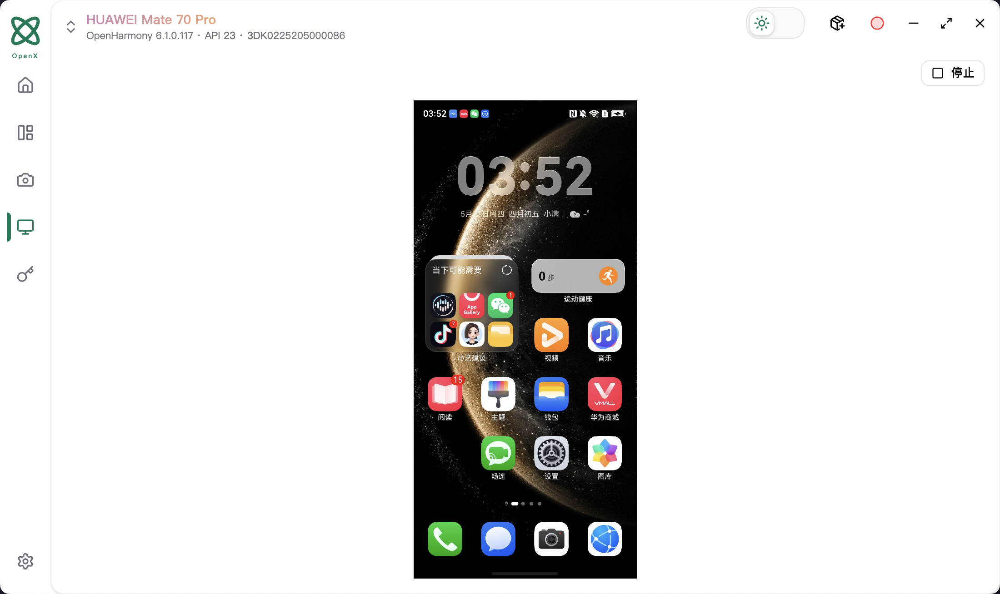
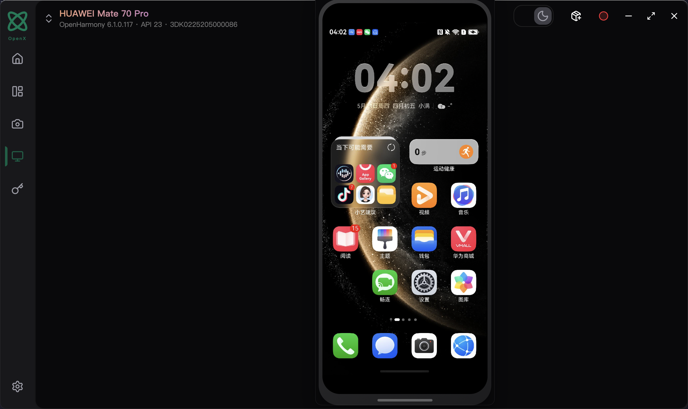
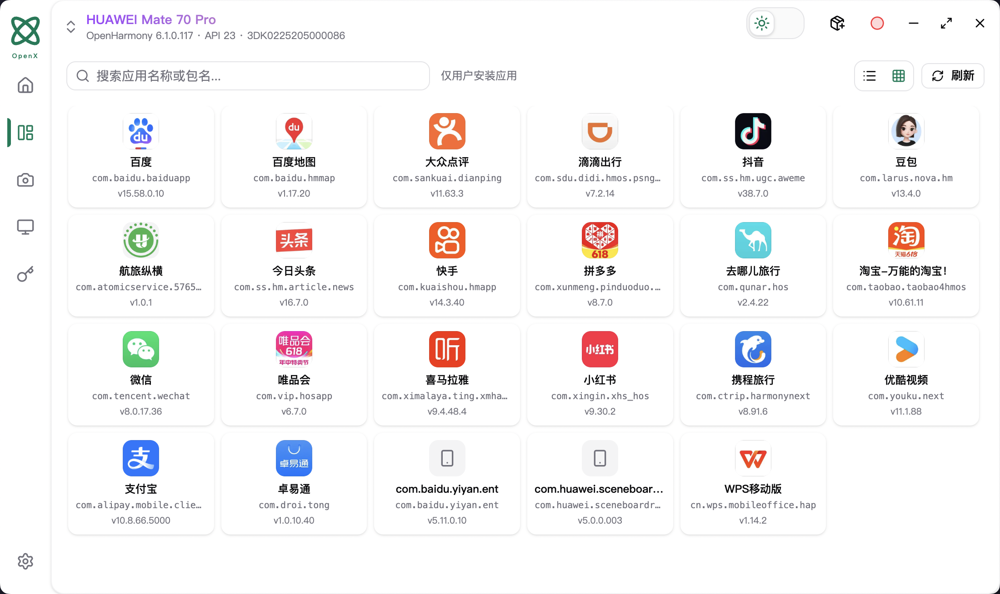
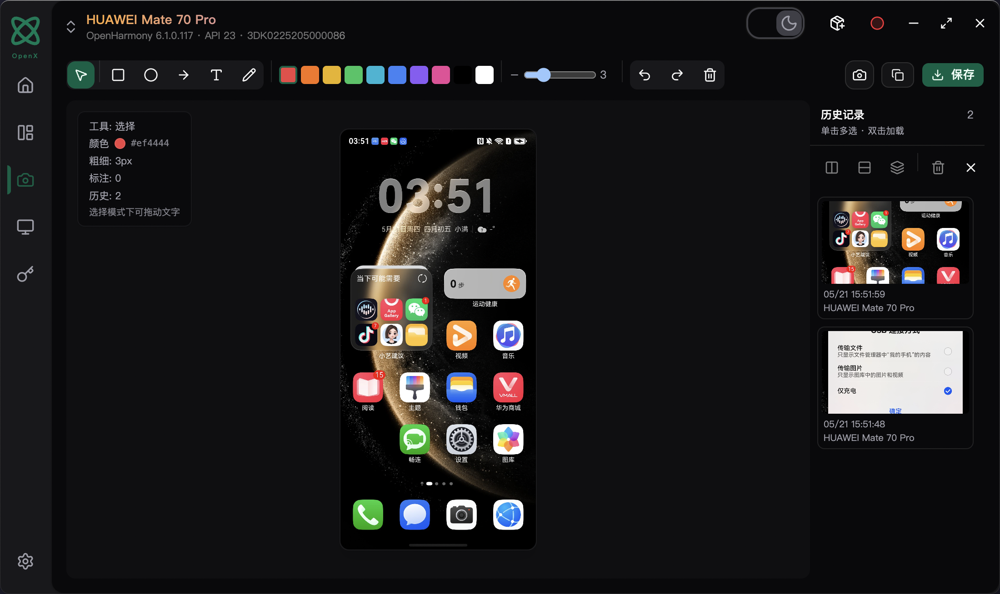
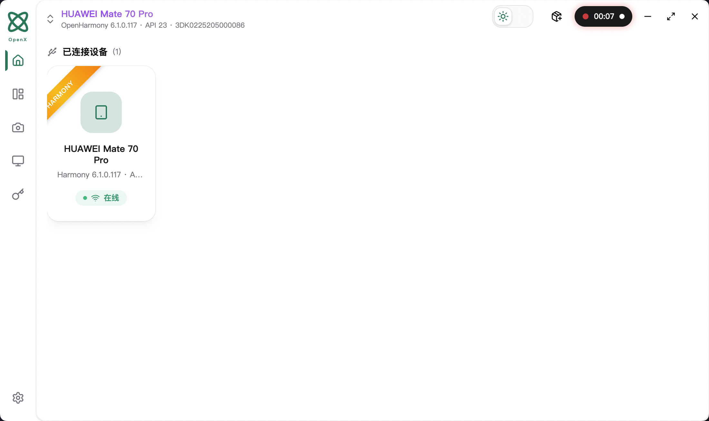
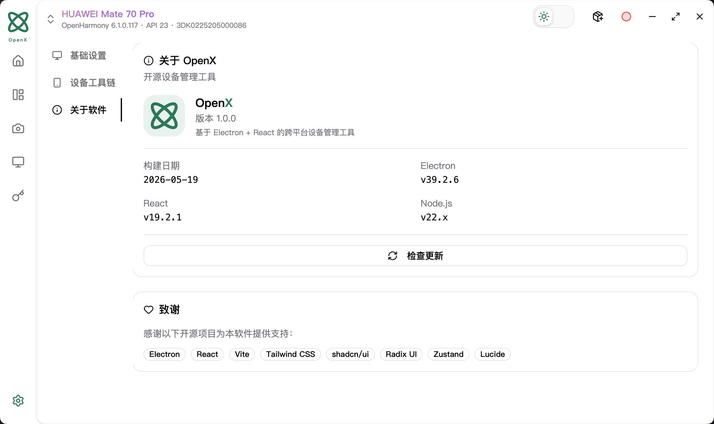

OpenX 是面向移动研发与测试的桌面工具，支持 ADB 与 HDC 双引擎， 内置 scrcpy 超低延迟屏幕镜像，让开发调试效率翻倍。
从设备连接到截图编辑，从录屏到应用管理，OpenX 覆盖移动开发全流程。
内置 scrcpy 实现超低延迟 Android 屏幕镜像；HarmonyOS 通过 UiDriver 实现嵌入与独立弹窗两种模式。
一键截取设备屏幕，内置基于 Konva 的画布编辑器，支持矩形、箭头、文字等多种标注工具，自动保存至导出目录。
灵动岛风格实时录制指示器，一键开始/停止录制，自动合成 MP4 文件并保存至本地导出目录。
支持 APK / HAP 安装，一键卸载、启动、停止、清除数据/缓存、禁用/启用，图标展示，系统应用过滤。
浏览设备文件系统，支持上传、下载、删除文件和创建目录，操作结果实时反馈。
持久化存储项目级键值对变量，支持增删改查，方便测试脚本与自动化流程共享配置数据。
ADB + HDC 双轨追踪，设备连接/断开自动推送，5 秒轮询保障状态一致，支持 USB 与网络双模式。
跟随系统自动切换，也可手动在标题栏一键切换，Tailwind CSS v4 驱动，精心调配的色板保证护眼体验。
基于 electron-updater，检查更新 → 下载 → 重启一气呵成，标题栏实时展示下载进度百分比。
真实应用截图，所见即所得。






明确了解每项功能在 Android 和 HarmonyOS 上的支持情况。
| 功能 | Android | HarmonyOS | 备注 |
|---|---|---|---|
| 设备发现与管理 | ✓ | ✓ | ADB / HDC 自动追踪 |
| 截图 + 标注编辑 | ✓ | ✓ | Konva 画布编辑器 |
| 屏幕镜像（嵌入/弹窗） | ✓ | ✓ | Android: scrcpy · HarmonyOS: UiDriver |
| 录屏 | ✓ | — | mp4-muxer 合成 MP4 |
| 应用安装 / 卸载 | ✓ APK | ✓ HAP | 原生文件选择对话框 |
| 应用启动 / 停止 | ✓ | ✓ | HarmonyOS 通过 Ability 启动 |
| 清除数据 / 缓存 | ✓ | — | ADB shell pm clear |
| 应用禁用 / 启用 | ✓ | — | 需要 root 权限 |
| 文件管理 | ✓ | ✓ | 上传 / 下载 / 删除 / 新建目录 |
| 全局变量管理 | ✓ | ✓ | 持久化键值存储 |
| 应用内自动更新 | ✓ | ✓ | electron-updater |
在使用 OpenX 过程中可能遇到的一些疑问与解答。
OpenX 采用 Electron 构建，支持 macOS (Intel & Apple Silicon)、Windows (64-bit) 和 Linux (AppImage/deb)。您可以一键打包出对应平台的安装文件。
请确保您已正确安装 DevEco Studio 及其 SDK，并且 hdc 命令可用。如果系统环境变量中未配置 hdc，您可以在设置中通过 OPENX_HDC_PATH 环境变量手动指定工具路径。
如果您遇到版本不匹配的问题，可能是因为您的设备中残留了旧版 scrcpy-server。尝试在应用管理中重启镜像，或在系统设置里自定义 OPENX_SCRCPY_SERVER_PATH 的包路径。
默认保存在系统图片和视频目录下。您可以在顶部标题栏点击齿轮图标（设置），在“基本设置”中自定义全局的导出目录。
开发模式一条命令启动；生产包跨平台打包发布。
# 克隆仓库 git clone https://github.com/wieszheng/openx.git cd openx # 安装依赖 npm install # 启动开发模式（热更新） npm run dev
# 构建 macOS dmg / pkg npm run build:mac # 产物输出至 dist/ 目录
# 构建 Windows exe / nsis 安装包 npm run build:win # 产物输出至 dist/ 目录
# 构建 Linux AppImage / deb npm run build:linux # 产物输出至 dist/ 目录
打包后程序从 resources/toolkit/ 加载随包工具，也可通过环境变量覆盖路径。